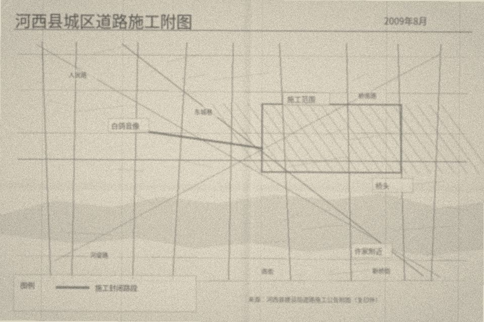

目录：8张JPEG / 文件名为相机导出编号 / 原目录无排列说明。
照片联系表
同目录文件：作品说明.txt / 草稿
02 妈洗菜，没拍脸。
03 小鸣写作业时的桌面。他说别拍，我还是拍了。
04 白鸽门口。谢远又把自行车停歪。
06 桥头。其实晚上也没什么好拍的。
2009年8月15日晚 · 城南道路附件

建设局施工公告附图转录件。原件纸张破损，路网与施工范围按可辨内容录入。
路线复原状态：未保存
当前路线：
联系人地址按“许家附近”记录，不显示具体门牌。
目录：8张JPEG / 文件名为相机导出编号 / 原目录无排列说明。
02 妈洗菜，没拍脸。
03 小鸣写作业时的桌面。他说别拍，我还是拍了。
04 白鸽门口。谢远又把自行车停歪。
06 桥头。其实晚上也没什么好拍的。

建设局施工公告附图转录件。原件纸张破损，路网与施工范围按可辨内容录入。
联系人地址按“许家附近”记录，不显示具体门牌。